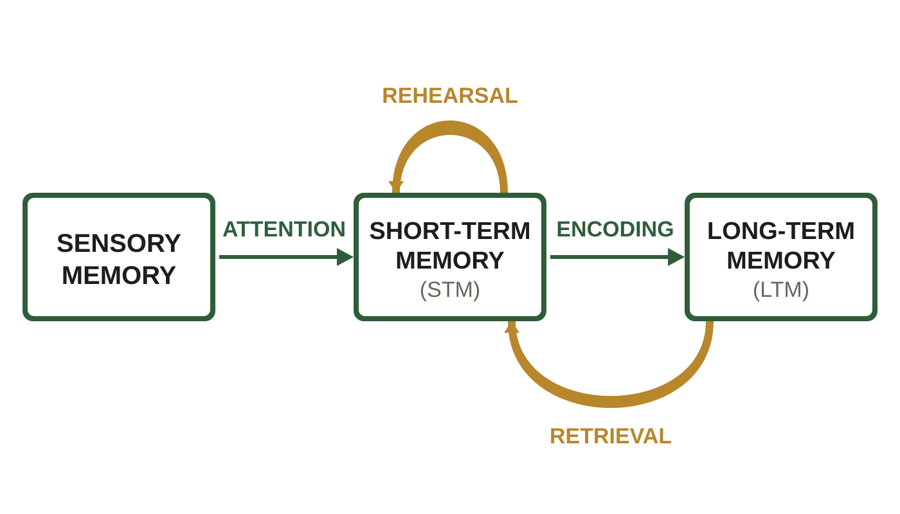
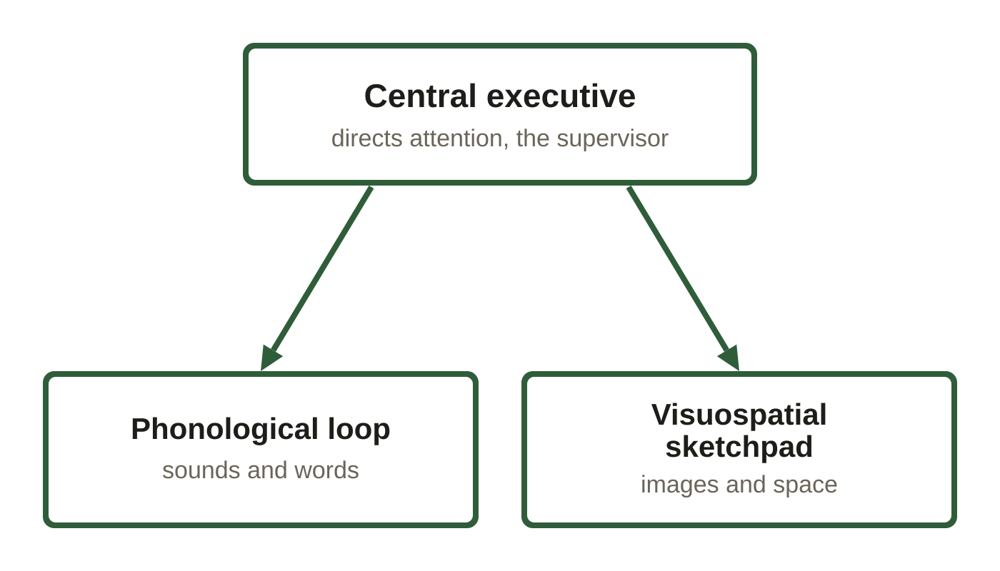
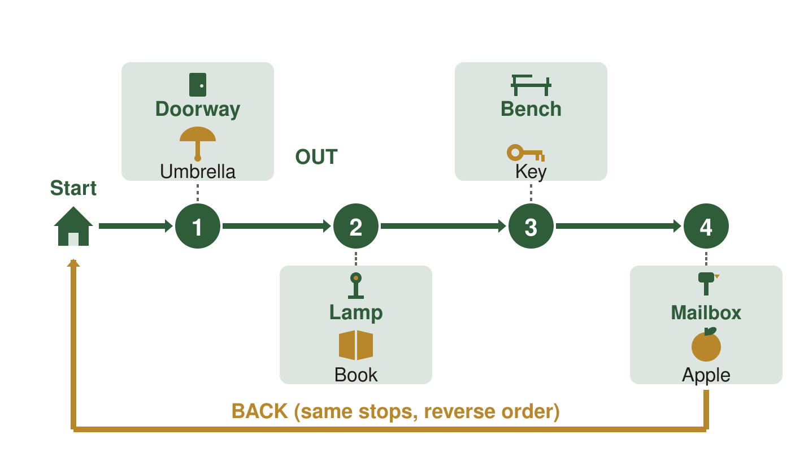
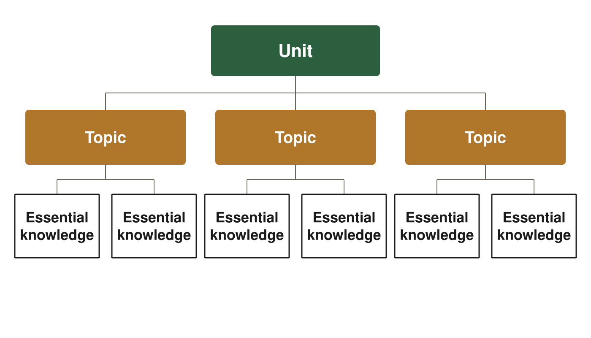
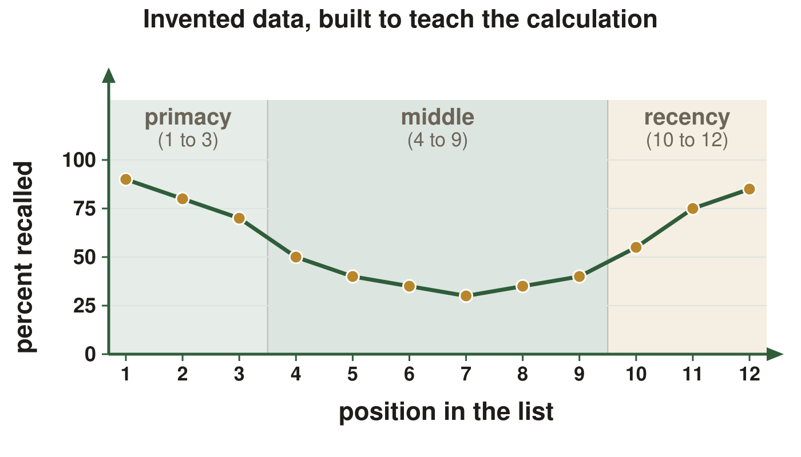

Introduction to memory; Encoding memories. These are the same figures as in your Class Notes, in the same order. If a figure in your notes shows as a gray box, use this page instead.
Slide 10. The Multi-Store Model (continued)

The multi-store model. The small loop is rehearsal and the long loop back is retrieval.
Slide 12. Working Memory

The working memory model: one supervisor directing two stores that hold different kinds of material.
Slide 16. Long-Term Potentiation (continued)
One synapse before and after potentiation. The same neurotransmitter is released both times; after potentiation the receiving neuron has more receptor sites to catch it. Dot counts are illustrative.
Slide 30. Walking the Route (continued)

The method of loci: an imagined walk past four familiar landmarks, one item parked at each. BACK is the same four stops in reverse order, not a second route.
Slide 32. Hierarchies

One branch of this course's own shape: unit, topic, essential knowledge. The counts drawn are illustrative, not the real number of topics or statements in any unit.
Slide 39. What Am I Looking At (continued)

The invented table drawn as a curve, with the primacy, middle and recency zones banded behind it.